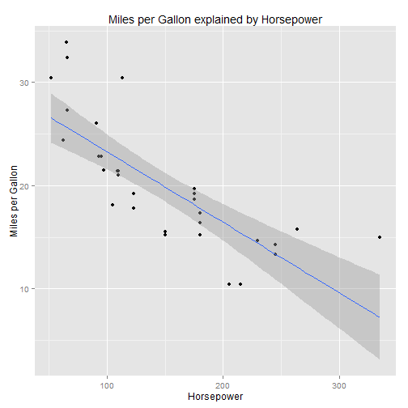

In this project i tried to show what factors of a motor car influences miles per gallon (MPG).
I looked at following variables:
- Weight (lb/1000)
- Horse Power
- Displacement (cu.in.)
Oliver Bruening
In this project i tried to show what factors of a motor car influences miles per gallon (MPG).
I looked at following variables:
The interactive Shiny application can be found here: https://ollib.shinyapps.io/project/
library(ggplot2)
print(ggplot(mtcars, aes(x = hp, y = mpg)) + geom_point() + xlab("Horsepower") +
ylab("Miles per Gallon") + ggtitle("Miles per Gallon explained by Horsepower") +
geom_smooth(method=lm, se=TRUE))

Please buy a small car or use public transport :-)
Thanks for watching!